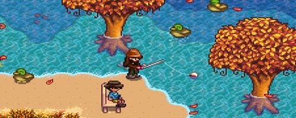

Why its Cool?
If you don't like farming their is still a plethora of things to do! You can go fishing, fight monsters in an abandoned mine to find forgotten treasures, solve puzzles, talk to and romance the townsfolk, enjoy seasonal festivals and visit exotic islands! There is something for everyone!
